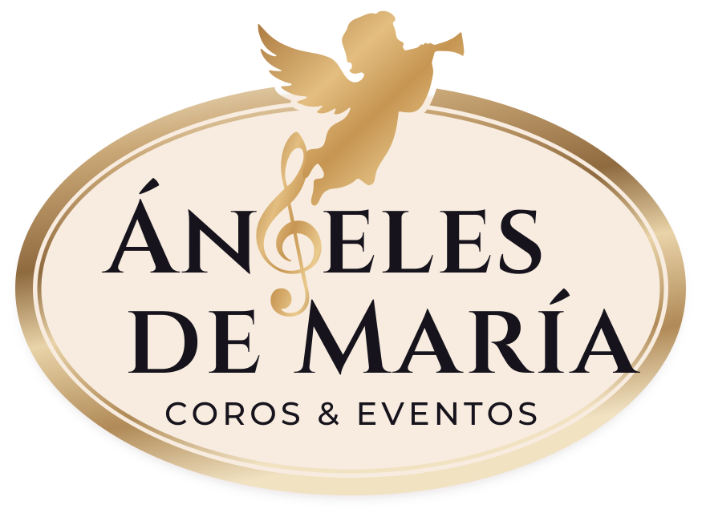

Coro con órgano
Para misas, matrimonios y villancicos clásicos en iglesias y salones.

Misa criolla, ceremonias y eventos de empresa todo el año; villancicos y encendidos de árbol en Navidad. Coro juvenil con órgano, cuerdas, vientos o cajón.
La misa cantada con cajón e instrumentos criollos, para parroquias, colegios y celebraciones peruanas.
Todo el añoCoro con órgano o con cuerdas para misas, matrimonios, bautizos y aniversarios.
Todo el añoRecepciones, aniversarios, inauguraciones y fiestas de fin de año, con saxo, flauta o cuerdas.
Todo el añoVillancicos en vivo y una cuenta regresiva cantada para el momento en que se prende el árbol.
Noviembre y diciembreVarias fechas en el mismo local durante diciembre, con un precio por fecha más bajo.
DiciembreLe enviamos el precio por WhatsApp o por correo. Cotizar presentación
Para misas, matrimonios y villancicos clásicos en iglesias y salones.
Violín, viola y chelo acompañando al coro en eventos y ceremonias.
Saxo y flauta para recepciones, brindis y fiestas de fin de año.
Con cajón e instrumentos criollos, para misas y celebraciones peruanas.
Trayectoria
Hemos cantado en Canal 4, en ministerios, en municipalidades y en los encendidos de árbol de Saga Falabella. Hoy el coro es juvenil: lo forman los nietos de la directora y chicos que ya cantan en eventos.
Fecha, distrito, tipo de evento y los instrumentos que le interesan.
WhatsApp se abre con sus datos escritos. Si su empresa pide la cotización por escrito, use el correo.
Le respondemos con el precio y los detalles para separar su fecha.
Si su duda no está aquí, escríbala en el formulario de cotización.
Depende del servicio, la formación y el espacio. Lo definimos con usted en la cotización.
Coordinamos el sonido con cada local. Si el lugar no tiene equipo, se cotiza aparte.
Sí. La movilidad y los viáticos se suman a la cotización.
Sí, en los eventos de empresa de Navidad. Nos envía el nombre y lo incluimos en la letra.
Del 15 al 24 de diciembre es lo más pedido. Para el resto del año, escríbanos apenas tenga la fecha.